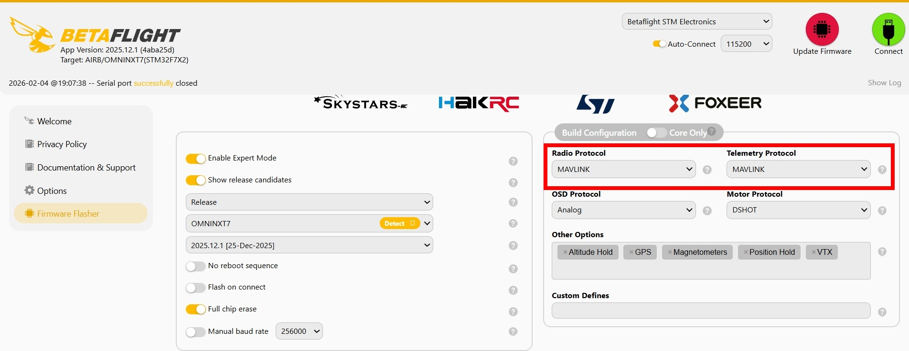
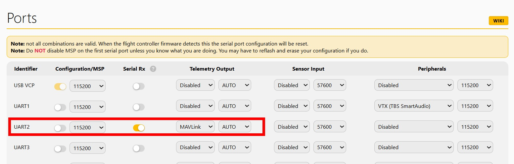
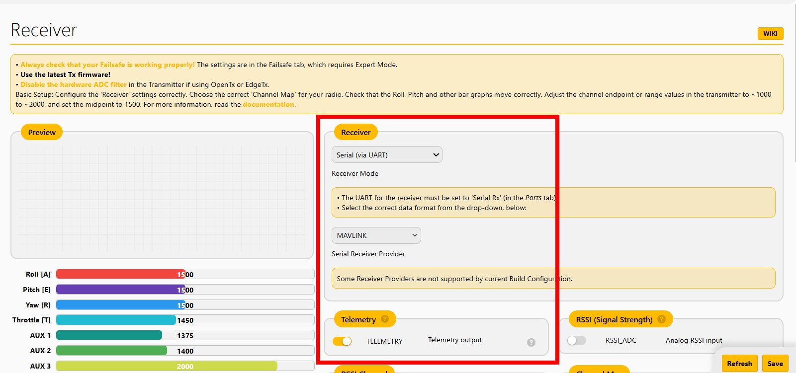
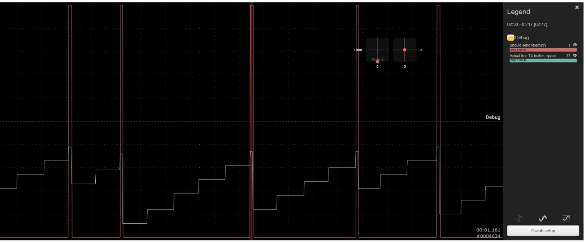
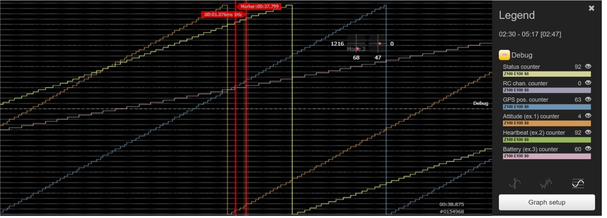
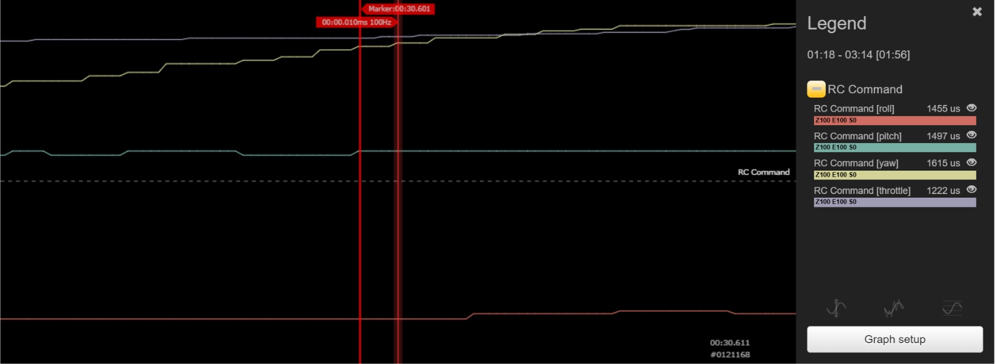

🛠 Прошивка и настройка Betaflight
1Запуск Betaflight Configurator
Откройте Online Betaflight Configurator.
Подключите полетный контроллер
Перейдите в раздел Firmware flasher
2 Прошивка Betaflight
Выберите свой полетный контроллер в списке.
Выберите последнюю Release версию firmware.
Укажите необходимые опции.
Выберите MAVLINK в качестве Radio Protocol и Telemetry Protocol.
Загрузите firmware (online).
Прошейте firmware.

Рис. 1:Прошивка Beteflight firmware
3 Настройка порта UART
Войдите в конфигуратор после прошивки BF firmware.
Перейдите на закладку Ports.
Для порта ELRS-приемника включите режим Serial-Rx и установите MAVLINK в качестве Telemetry Output

Рис. 2: Настройка порта
4 Настройка приемника
Перейдите на закладку Receiver.
Установите Receiver mode - Serial, Serial receiver provider - MAVLINK, включите телеметрию

Рис. 3: Настройка приемника
🛠 Тонкая настройка Betaflight
Настройки Betaflight по умолчанию обеспечивают функционирование MAVLink.
Проверка и более тонкая настройка, позволяющая снизить нагрузку на радиоканал телеметрии, требует использования приложения Betaflight Blackbox Explorer, установки отладочного режима логирования MAVLINK_TELEMETRY и команд CLI.
Betaflight позволяет настраивать частоты передачи пакетов MAVLink телеметрии при помощи CLI команд:
- mavlink_pos_rate - частота передачи GPS параметров (по умолчанию - 2Hz)
- mavlink_rc_chan_rate - частота передачи сигналов управления (RC) (по умолчанию - 1Hz)
- mavlink_ext_status_rate - частота передачи статуса состояния (по умолчанию - 2Hz)
- mavlink_extra1_rate -частота передачи углового положения (по умолчанию - 2Hz)
- mavlink_extra2_rate - Heartbeat pack + VFR HUD (по умолчанию - 2Hz)
- mavlink_extra3_rate - частота передачи состояния батареи (по умолчанию - 1Hz)
Для идентификации полета БВС целесообразно изменить настройки с помощью следующих команд CLI:
- mavlink_pos_rate 3
- mavlink_rc_chan_rate 0
- mavlink_ext_status_rate 0
- mavlink_extra1_rate 0
- mavlink_extra2_rate 1
- mavlink_extra3_rate 1
Данные настройки отключают передачу ненужных пакетов и повышают частоту передачи GPS параметров.
Работа MAVLink телеметрии может быть проверена с помощью записи полетных параметров.
Откройте Online Betaflight Configurator, подключите полетный контроллер, перейдите на страницу "Blackbox" и установите отладочный режим MAVLINK_TELEMETRY.
Сделайте запись параметров квадрокоптера (можно на земле, без полета).
Откройте полетную запись с помощью online приложения Betaflight Blackbox Explorer.
Выберите Debug параметры для просмотра.
Проверьте что в процессе передачи телеметрии (по радиоканалу с дрона) не происхоит переполнения TX-буфера:

Проверка TX-буфера
В процессе передачи телеметрии TX-буфер не должен переполняться - Свободное место в буфере (Actual free TX bufer space) не должно опускаться до нуля.
Защита буфера от переполнения реализована заданием минимального порога свободного места буфера, выше которого производится отправка пакетов телеметрии.
Минимальный порог свободного места буфера задается CLI параметром mavlink_min_txbuff, который по умолчанию задан 35%
Проверьте что частота передачи пакетов телеметрии соответствует заданным по счетчикам пакетов:

Проверка частоты передачи пакетов телеметрии
Проверьте реальную частоту приема RC-сигналов в полетном контроллере:

Проверка частоты RC параметров
В моем случае она составляет 100Hz при настройках в ELRS 250Hz!
Такова особенность реализации режима двусторонней передачи MAVLink в ELRS.
Это необходимо учитывать при настойке фильтров RC-канала или при выборе пресетов в конфигураторе.